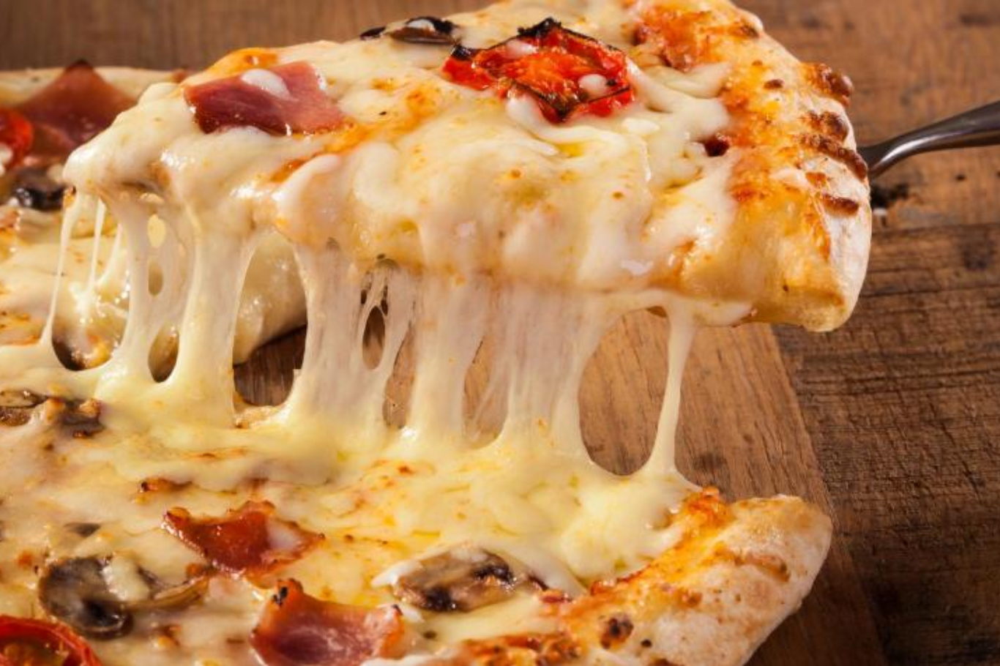

Pizza
Ingredientes
- 1 kilogramo de harina 00
- 1 cucharadita de sal fina
- 2½ tazas de agua tibia
- 2 cucharadas soperas de aceite de oliva
- 30 gramos de levadura fresca
Pasos
- Antes de empezar con la receta de pizza casera fácil, es fundamental hacer una aclaración sobre la harina. La harina más recomendada para este tipo de masas es harina 00. Contiene un mayor porcentaje de gluten, lo que resultará en una masa de pizza casera más esponjosa. Si deseas hacer pizza casera sin gluten, consulta otra receta.
- Mezcla en un recipiente el agua templada con la levadura fresca. Puedes usar levadura seca si lo prefieres, mezclándola con la harina. La levadura fresca se debe mezclar con agua tibia. Generalmente, 30 gramos de levadura fresca equivalen a unos 10 gramos de levadura seca.
- Agrega las dos cucharadas de aceite a la mezcla de levadura y agua. Mezcla bien para integrar los ingredientes.
- En un bol amplio, coloca la harina de fuerza y la sal en forma de volcán. Vierte la mezcla de levadura en el centro.
- Comienza a amasar hasta que la masa de pizza deje de pegarse en tus manos y puedas manejarla sin problemas.
- Divide la masa en 4 particiones, forma una bola con cada una y déjalas reposar durante 45 minutos hasta que dupliquen su volumen. Cada bola de masa será para una pizza casera.
- Después de reposar, estira una de las bolas de masa en una mesa espolvoreada con harina. Puedes usar tus manos o un rodillo para darle forma circular y agregar la salsa y los ingredientes de tu elección.